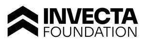

Trade Mark Journal No.2025/052 26 December 2025
UK00004304490 3 December 2025 (35,36,45)

International priority date claimed: 6 November 2025
(Australia)
(2600362)
- Class 35
- Advertising and marketing; providing business administration and management of housing facilities; advertising services in the field of politics; political advertising services; commercial lobbying services; organising and developing business projects that aim to improve the lives of underprivileged and impoverished people for charitable purposes; developing and coordinating volunteer business projects for charitable organisations; organizing and conducting volunteer projects aimed at improving the lives of underprivileged persons for charitable purposes; arranging and conducting volunteer projects aimed at improving the lives of underprivileged persons for charitable purposes; recruitment, organisation and deployment of volunteers for charitable purposes; charitable services in the nature of organizing and conducting volunteer programs aimed at improving the lives of underprivileged persons; charitable services in the nature of organizing and conducting volunteer projects aimed at improving the lives of underprivileged persons; organising and conducting of volunteer programs and community service projects for charitable purposes; organising and conducting volunteer business programs for charitable purposes; organizing and conducting business projects for volunteer community for charitable purposes; charitable services in the nature of arranging and conducting volunteer projects aimed at improving the lives of underprivileged persons; charitable services in the nature of organising and conducting volunteer projects to promote public awareness of environmental issues and initiatives; charitable services in the nature of organizing and conducting volunteer projects to promote public awareness of environmental issues and initiatives; charitable services in the nature of organising and conducting volunteer programmes aimed at improving the lives of formerly incarcerated persons and their families; charitable services in the nature of organizing and conducting volunteer programs aimed at improving the lives of immigrants; charitable services in the nature of arranging and conducting volunteer programs aimed at improving the lives of underprivileged persons; charitable services in the nature of arranging and conducting volunteer programs aimed at improving the lives of asylum seekers; promotional sponsorship of charitable fundraising events; arranging and conducting charitable business projects for the sports community; commercial advocacy [promoting, publicising or otherwise representing the interests or concerns of others]; promotional sponsorship of organizations promoting environmental stewardship and preservation; charitable services in the nature of organizing and conducting volunteer projects to promote public awareness of environmental matters; promoting public awareness of environmental matters; organising and conducting volunteer programmes and community service projects for environmental purposes; providing business information for charitable organizations; providing business information; advertising and promotional services regarding politics, political engagement and political information to raise voter awareness; compilation and analysis of data featuring political information on politicians, election candidates, election campaigns, election campaign finance, election results and outcomes; business information and research services; business research; career networking services; providing networking opportunities for individuals seeking employment; providing business administration and management of nursing home facilities for needy children and underprivileged persons; providing business administration and management of nursing home facilities; charitable services in the nature of organising and conducting volunteer projects aimed at improving the lives of immigrants; charitable services in the nature of organising and conducting volunteer projects aimed at improving the lives of refugees.
- Class 36
- Organization of monetary collections; financial sponsorship; financial patronage; providing financial sponsorship of a charity event; trust services; project capital investment services; political fundraising; fundraising; organisation of charitable collections; providing monetary grants to charities; organisation of charitable fund-raising for business activities; charitable donation collection and charitable fundraising for others; charitable fundraising; fundraising for charitable purposes; organization of charitable fundraising events; collection of charitable donations and charitable fund raising for others; organisation of charitable fundraising for business activities; fund raising services for charitable purposes; charitable fund raising for underprivileged children; providing financial information; financial management and research services; providing fundraising services for others via a global computer network.
- Class 45
- Providing clothing to children in need and underprivileged people for charitable purposes; mediation services; legal services in the field of child protection; social introduction agency services; legal services in the field of immigration; provision of information in relation to migration and immigration services; providing information in relation to migration and immigration services; immigration agency services [legal services]; political lobbying services relating to government policies; political lobbying services; lobbying services relating to legislation and regulation; promoting the interests of international, real estate and nonprofit companies in the fields of politics, legislation, and regulation [lobbying services]; online social introduction services; personal growth and motivation consultancy services; legal lobbying services; legal advocacy services; legal advice and representation; providing patient advocate services to hospital patients and patients in long term care facilities; providing legal information; providing information in the field of law; providing information relating to political issues; providing information regarding political parties; providing information regarding political lobbying services; political research and analysis services; political lobbying services relating to international affairs policies; legal research services; background investigation and research services.
INVECTA FOUNDATION PTY LTD as Trustee for Invecta Foundation Trust
Representative: IP SERVICE INTERNATIONAL